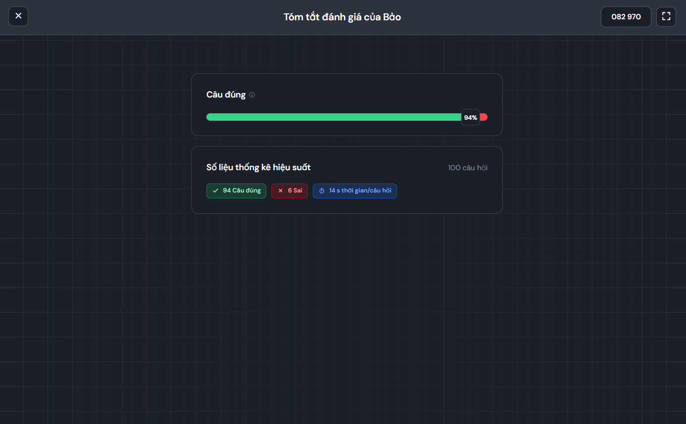

Thanh Bảo
Menu
Trang chủ
Giới thiệu
Liên hệ
Bài 1
Bài 2
Bài 3
Lý thuyết
Bài tập 23
Bài tập 22
Điểm danh
Bài tập 22
Hình chụp kết quả Bài tập 22.

Kết quả Bài tập 22: 94 câu đúng, 6 câu sai trên 100 câu hỏi.
← Về Bài tập 23